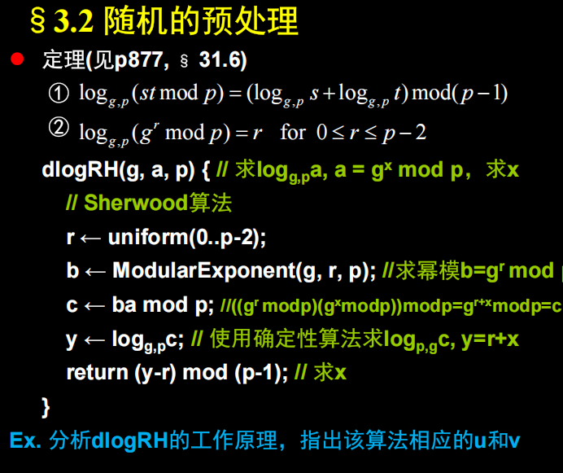
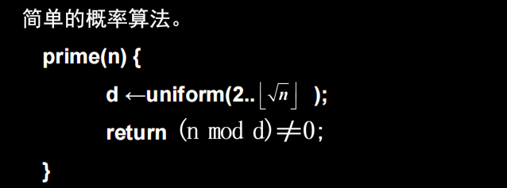
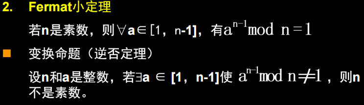
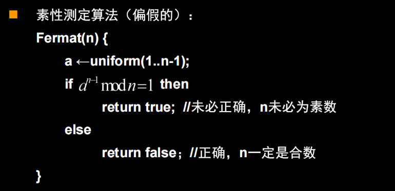
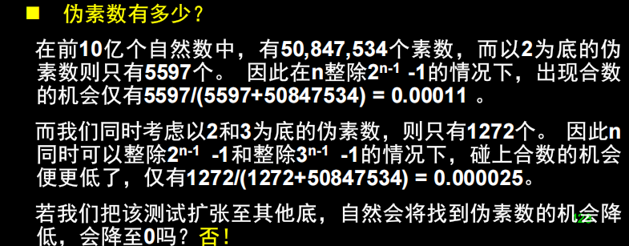
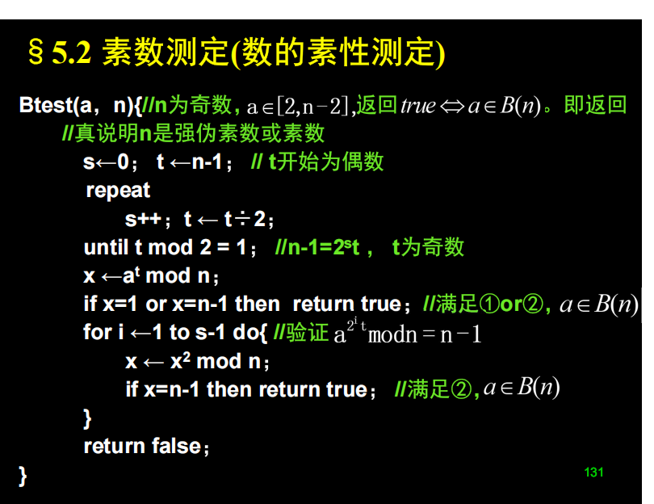
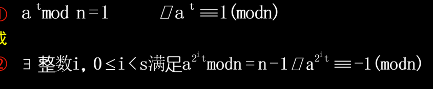

概率算法ppt总结
计算 $a = g^{x} mod \ p$
离散对数计算的问题 最坏情况下是$O(p)$
这里可以使用Sherwood算法引入随机性，降低进入最坏情况的概率。

这个改写利用了随机预处理来改变求解的实例，使得原本可能在特定输入下性能不佳的确定性离散对数算法 $log_{g,p}$，能够以接近平均性能的效率求解。
🔬 $dlog_{RH}$ 算法工作原理分析
1. 算法目标
- 问题: 离散对数问题。
- 输入: 基数 $g$，目标值 $a$，模数 $p$。
- 求解: 找到指数 $x$，使得 $g^x \equiv a \pmod{p}$。
- 模: 运算发生在 $\mathbb{Z}p^*$ (模 $p$ 乘法群) 中。指数 $x$ 在 $\mathbb{Z}{p-1}$ (模 $p-1$ 加法群) 中，即 $x \in {0, 1, \dots, p-2}$。
2. $dlog_{RH}$ 步骤解析
| 步骤 | 代码 | 解释 | 作用 |
|---|---|---|---|
| I. 随机数 | r ← uniform(0..p-2); |
随机选择一个指数 $r \in {0, 1, \dots, p-2}$。这是随机性的来源。 | 引入随机变量 $r$。 |
| II. 预处理 (实例 $y$) | b ← ModularExponent(g, r, p); |
计算 $b = g^r \pmod{p}$。 | |
c ← b \cdot a \pmod{p}; |
计算 $c = b \cdot a \pmod{p} = g^r \cdot g^x \pmod{p} = g^{r+x} \pmod{p}$。 | 原实例 $a$ 变换为随机实例 $c$。 | |
| III. 确定求解 ($f$) | y ← logg,pc; |
使用确定性算法 $log_{g,p}$ 求解实例 $c$。目标是找到 $y$，使得 $g^y \equiv c \pmod{p}$。 | $y$ 是 $r+x$ 的解。 |
| IV. 后处理 ($v$) | return (y-r) mod (p-1); |
$y$ 是 $r+x$ 的解，所以 $y \equiv r+x \pmod{p-1}$。因此，$x \equiv y-r \pmod{p-1}$。这是将解 $y$ 变回 $x$ 的步骤。 | 恢复原实例 $a$ 的解 $x$。 |
3. $u$ 和 $v$ 函数的确定
根据 Sherwood 算法的随机预处理一般方法：
- 原实例 $x$: 在离散对数问题中，原实例是目标值 $a$。
- 随机变量 $r$: 在 ${0, 1, \dots, p-2}$ 中随机抽取。
- 确定性算法 $f$: 是 $log_{g,p}$，即 $f(a) = x$。
1. 预处理函数 $u$
$u(a, r)$ 的作用是将原实例 $a$ 变换为随机实例 $c$。
$$\text{原实例 } a \xrightarrow{u(a, r)} \text{随机实例 } c$$
根据代码 $c \leftarrow (g^r \pmod{p}) \cdot a \pmod{p}$：
$$u(a, r) = (g^r \cdot a) \pmod{p}$$
2. 后处理函数 $v$
$v(r, s)$ 的作用是将确定性算法的解 $s$ (即代码中的 $y$) 结合随机变量 $r$，变换回原实例的解 $x$。
$$\text{随机变量 } r \text{ 和 解 } s \xrightarrow{v(r, s)} \text{原实例的解 } x$$
根据代码 $x \leftarrow (y-r) \pmod{p-1}$：
$$v(r, s) = (s - r) \pmod{p-1}$$
5.2 素数判定问题 p124
- 方法1：随机因子

在 n = 2623 的情况下 $2 - \sqrt{2623}$随机选择有98%的概率正确
- 方法2：费马小定理的逆否命题


显然这种判定比较不负责（只要有 mod n == 1就是素数 不等于1就不是）
满足$a^{n - 1} mod \ n = 1$的数我们称为伪素数

也就是说，仅仅使用费马小定理，会有一些合数比较特殊，他们有很多的a做了运算后
均为1。这就迎来了我们的方法3
- 方法3： Miller-Rabin测试


判断一个底数 $a$ 是否为强伪证据：
分解 $n-1$：
将 $n-1$ 分解为 $2^s t$（$t$ 为奇数）。
计算初始值：
计算 $x \leftarrow a^t \pmod{n}$。
检查条件 ① 和 $i=0$ 的条件 ②：
如果 $x=1$ 或 $x=n-1$（即 $a^t \equiv 1 \pmod{n}$ 或 $a^t \equiv -1 \pmod{n}$），则 $a$ 满足条件，返回 $true$（$a$ 是强伪证据）。
循环检查其余的条件 ②：
执行 $s-1$ 次循环，在每次循环中计算 $x \leftarrow x^2 \pmod{n}$（相当于检查 $a^{2^i t} \pmod{n}$）。如果在循环中发现 $x=n-1$，则满足条件②，返回 $true$（$a$ 是强伪证据）。
返回 $false$：如果所有检查都未通过，则 $a$ 不是强伪证据。此时 $a$ 是 $n$ 是合数的强证据，所以 $n$ 必定是合数，返回 $false$（测试成功）。
这种方法大大缩减了伪证据数目